Встречи в пути
Велопоход это не только километры и достопримечательности, но и встречи с людьми, разными, но всегда интересными людьми. Буквально несколько кадров на тему встреч.
Павел:
В туристической части нашего маршрута около городов Ле и Шимла мы неоднократно встречали велосипедистов. География очень обширная. Немцы, группа из трех канадских девушек, два пожилых солидных дяди из Новой Зеландии, а также большая белорусская группа с женщинами и ребенком. Что скажешь, район Шимлы в силу комфортного климата - очень популярное место для велотуризма.
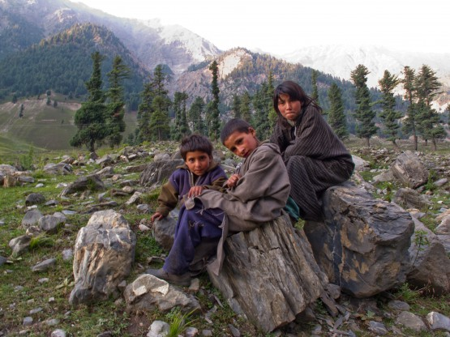
Местные детишки
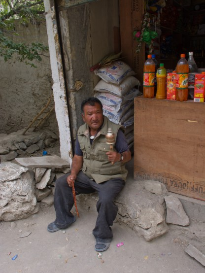
В одной руке четки, в другой крутилка, издающая звук, при этои еще торгует в лавке
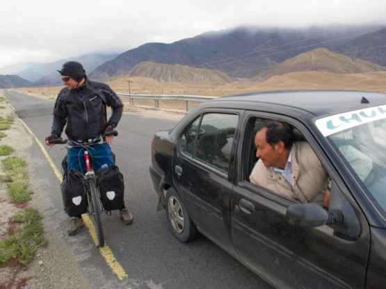
Немецкий велотурист
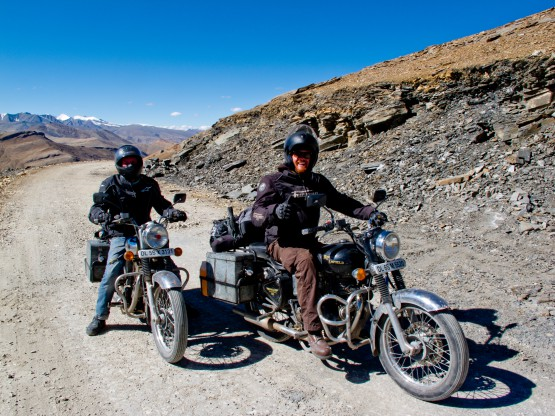
Опять же немцы, но байкеры
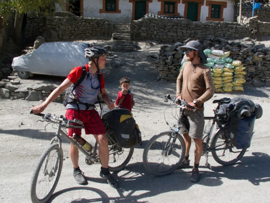
Француз едет из Парижа в Пекин уже шестой месяц.
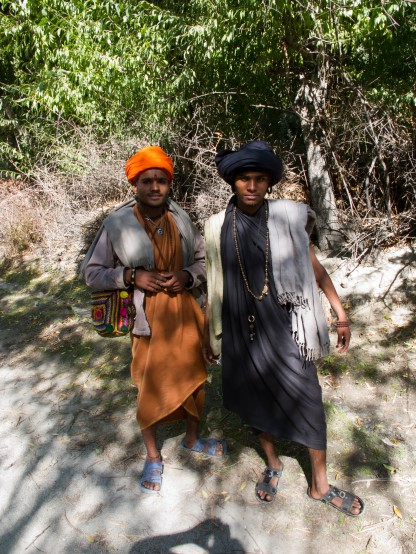
Это не хорошие ребята, пытались развести нас на 5 рупий -)
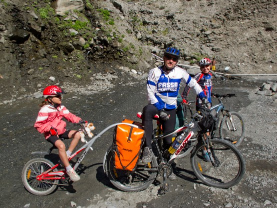
Приятная встреча с белорусскими коллегами
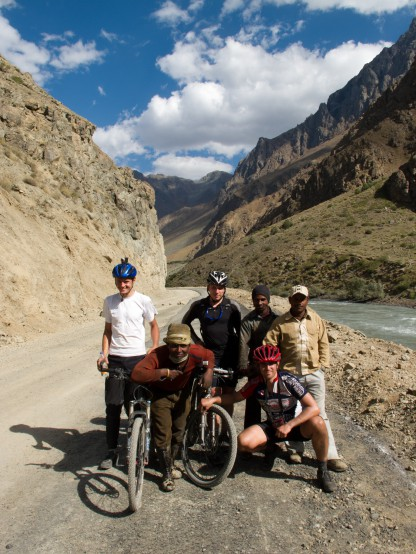
Фото с дорожными рабочими.
Как, вы не едете через Пакистан?!
Никогда бы не подумал, что этот вопрос мне зададут, тем более разные люди и несколько раз. Оказывается, все интуристы уже давно ездят в Индию через Пакистан и наоборот. Велосипедисты, автостоперы, все. Меня это сильно удивило, я искренне считал Пакистан страной небезопасной, а европейцев ребятами осторожными. В чем-то я ошибался.
Улыбаемся и машем
Представьте себе ситуацию: поднимаетесь вы на очередной перевал. Час поднимаетесь, два, три. . . тяжело, гипоксия, болит голова и даже красота окружающих гор не сильно радует. Навстречу идут люди, простые дорожные рабочие в несуразных одеждах, с шарфами, намотанными на уши. Впереди у них целый день таскания камней или работы кувалдой, а позади ночь, проведенная под полиэтиленовым навесом.
Казалось бы, ни вам, ни им улыбаться вроде как не с чего. . . НО стоит улыбнуться, помахать им рукой и все меняется и преображается. Люди буквально светлеют, лица озаряет самая настоящая и неподдельная радость, какая бывает, пожалуй, только у детей. Они начинают махать руками, кричать Джулей-Джулей (местное доброе пожелание).
Вдруг, неожиданно для себя, ты понимаешь, что у тебя больше не болит голова, ноги крутят с удвоенной силой и тебе хорошо, не тебе ОЧЕНЬ ХОРОШО и радостно. Что это было? Как понять механизм этого чуда? Получается, что достаточно сделать над собой небольшое усилие, сделать маленький шаг, улыбнуться первым и обратно ты получаешь в 10 раз больше. Или это особенность именно индусов?
Вот местная деревня, другие люди, но все повторяется в точности и так десятки раз за день. Появляется шальная мысль, вот, мол, приеду в Петербург и надо попробовать у нас проехать по улице улыбаясь и приветствуя всех прохожих. Нет, пожалуй, у нас сдадут в дурку. . .

Посмотрите на эти открытые лица и светлые улыбки
Небольшое видео из Вконтакта на тему смеха, потратьте 5 минут, не пожалеете.
Еда
Формат похода предполагал минимальный вес рюкзаков. Еще дома мы в подробностях обсуждали, что брать и на чем можно сэкономить пару грамм )) Единственное, что мы решили брать сразу и без лишних споров это мясо, так как с мясом в стране вегетарианцев плохо, вернее очень плохо.
Была мысль взять сублимированное мясо тут http://www.galagala.ru/, но они не высылают по почте, а ехать в Москву ради этого не хотелось, как и суетится перед вылетом. Кроме того жаба высказала свое мнение и мы занялись сушкой говяжьего фарша дома.
Сушеный говяжий фарш - это проверенная тема. Чтобы все получилось желательно, чтобы исходное мясо было очень постным и не мороженным. Мясо два раза пропускается через мясорубку, соль и специи добавляются по вкусу.
Сушка происходит на очень медленном огне в приоткрытой духовке. Самое главное разложить фарш на противень равномерно, тонким слоем, не сминая цилиндрические колбаски, которые выходят из мясорубки. Удобнее всего это делать забирая фарш прямо на выходе мясорубки.
На первом этапе сушки фарш превращается резиноподобную массу. Какая это вкуснятина! Особенно с пивом или красным вином. . . Тут главное не увлекаться, а то выход готового продукта может упасть до нуля )) Обратите внимание, что именно в этот момент желательно мелко покрошить фарш, дальше он начнет твердеть и сделать это будет сложнее. Окончательное досушивание можно проводить в несколько подходов.
В итоге получаем сухие гранулы, примерно в три раза легче исходного мяса. Хранить их перед походом удобнее всего в морозильнике плотно завернув в полиэтиленовый пакет. Кстати, хранится очень долго и не теряет своих свойств, так что можно делать задолго до похода, тихими зимними вечерами.
Как вы уже поняли, процесс изготовления длительный, зато получается в три раза дешевле сублиматов, даже при условии покупки самого дорогого мяса, а по весу не тяжелее.
В итоге мяса у нас было много, хватило на весь поход. Мы его добавляли везде, где можно: в рис, ели с бобовыми и с макаронами. Как вегетарианцы обходятся без животного белка я не знаю, но крутить педали по 100 км в день, со средним набором высоты под 2 километра и в условиях гипоксии я, наверное, не смог бы без нормальной пищи.
Справедливости ради, надо отметить, что пищу, содержащую животный белок, можно было найти почти везде за исключением буквально нескольких дней пути. Одно из самых распространенных блюд - это омлет, его готовят в большинстве дхаб (кафе). Немного белка есть в молоке, на котором варят местный чай.
Примерно три раза удалось поесть вкуснятину, которая называется МО-МО - это тибетские пельмени с начинкой из мяса и лука (хотя бывают и чисто овощными). В самом начале пути, в Сринагаре, было много мясного, но мы еще не понимали цимеса )) Зато в Дели оторвались, аж пару раз -). Итого мясные блюда удалось найти примерно 5 раз за 3 недели.
Несколько слов о местных магазинах. Супермаркетов мы не встретили, мало того, чем выше в горы и дальше от крупных городов, тем скромнее становился ассортимент в лавках. Через неделю мы уже перепробовали все виды местного печенья, поняли, что оба вида макарон есть практически невозможно, да и вообще, выбирать там особо не из чего. В обычной лавке в горах есть пару видов круп, 3-4 вида печенья, чипсы, конфетки, жвачки, вкуснятинка под названием Дал в маленьких пакетиках, сахар, соль. . . Не каждый день, но попадались бананы, позже яблоки, овощей практически не было. В некоторых лавках встречались рыбные консервы 1 или 2 вида, но все не вкусные.
Естественно, внизу и в крупных городах все иначе, там есть все или почти все. Чем питаются люди в горах я так и не понял. Огородов не заметно, мясо не едят, в лавках ничего нет. . . наверное, святым духом.
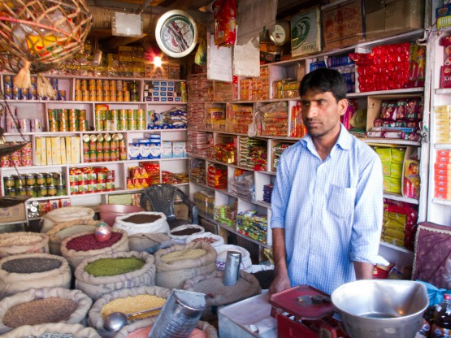
Один из самых "богатых" магазинов на нашем пути.
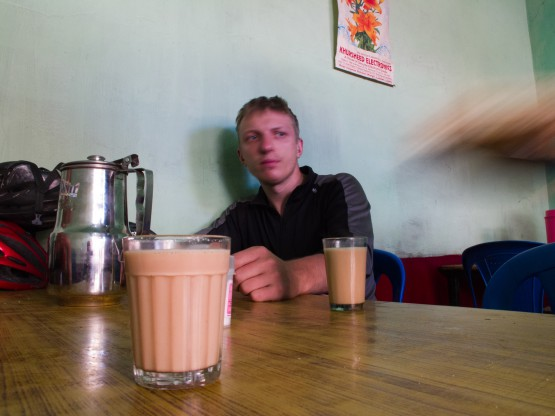
чай масала (на молоке со специями)
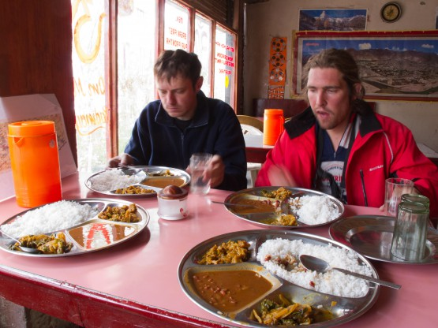
Все, кроме риса очень острое
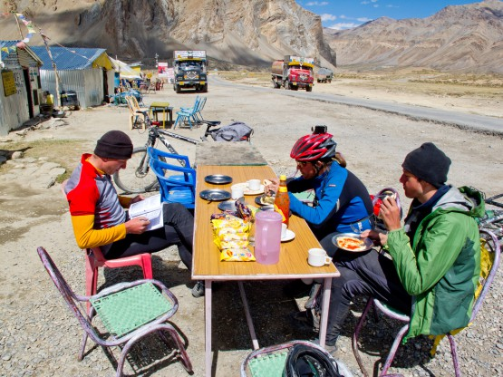
Бомж-пакеты они и в Индии бомж-пакеты
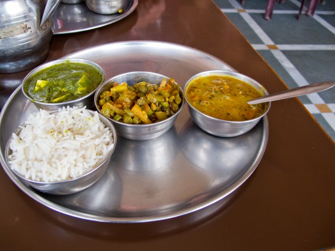
Еще один вариант сервировки. Кстати, в зелененьком соусе плавают вкуснейшие кусочки сыра, но все очень острое.
Красный велосипед
Никогда не думал, что цвет велосипеда может так влиять на восприятие окружающего мира. Ну, да, по порядку. За пару недель до похода у моего верного коня GT сломалась рама (не зря мы тренировались по 3 раза в неделю -)). Надо заметить, что попривык я к нему за последние несколько лет, как-то сроднился. Первое, что люди говорили при виде этого велосипеда: даа, видно, что на нем катаются. Вся рама была покрыта ровным слоем царапин так, что ее черный цвет узнавался не сразу.
Делать нечего, пришлось собирать новый велосипед. Оказалось, что запчастей в шкафу на него хватило и даже осталось еще на пол велосипеда.
И вот он новый красавчик на раме Specialized s-works ярко алого цвета, вилке Reba team и XT по кругу. Всем хорош получился! Но, одного, очень важного факта, я не учел. . .
Все началось буквально в аэропорту Сринагара. Я всегда стараюсь собирать велосипед, не выходя из здания аэропорта, где обычно спокойнее, теплее/холоднее, чище и больше места, но в этот раз такого счастья нам не светило. Аэропорт Сринигара скорее похож на главную улицу мегаполиса, чем на уютное место, пришлось отойти на сотню метров в, как нам тогда казалось, тихое место. Да, уж, тихое. Буквально через 5 минут вокруг нас была толпа и, что интересно, толпа не расходилась до самого окончания сборки велосипедов. Тихонько сидели, обсуждали, подходили ближе и ТРОГАЛИ запчасти.
Велотуристы всегда вызывают повышенный интерес местных, к этому я уже привык, как привык к тому факту, что тебя и твои вещи руками не трогают. Стоят вокруг, обсуждают, пытаются общаться с тобой, но не трогают вещи. В Сринагаре было наоборот, да, они ничего не украли, не отломали и т.п. но было очень не по себе.
Тогда я списал это на некую особенность Сринагара, но, как выяснилось позже, скорее это особенность всей Индии. В любом городе было достаточно остановиться, как в тот же миг вокруг нас собиралась маленькая такая толпа, человек на 10-20. Все с огромным любопытством рассматривали велосипеды, нажимали на монетки переключателей, на все кнопки велокомпов и GPS, крутили контактные педали. . . За 3 недели я так и не смог к этому привыкнуть.
Почему я начал рассказ именно со своего нового красного-прекрасного велосипеда. Дело в том, что ему доставалось внимания в несколько раз больше чем, скажем, Пашиному серенькому полностью титановому байку.
Не надо ездить по Индии на красных велосипедах, я вам точно говорю!
Кстати, прогуливаясь по тому же Сринагару или Ле без велосипедов мы уже не привлекали практически никакого внимания, ну почти.
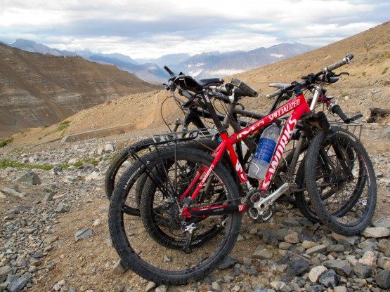
Вот он красавчик
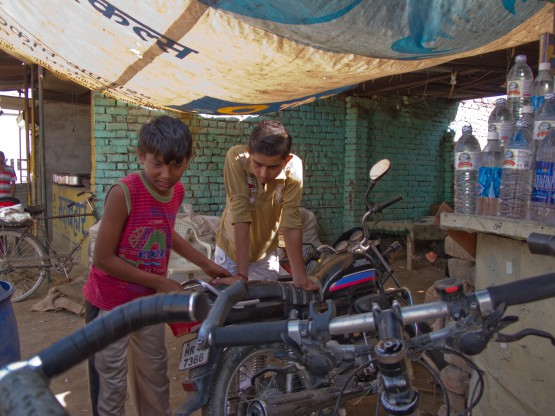
Пацанам очень любопытно